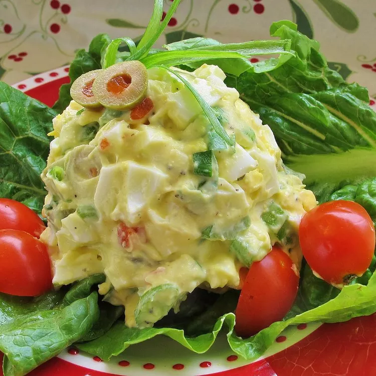

Egg Salad

This is a great egg salad recipe that a woman I babysat for made! The key ingredient is the chopped pimento
stuffed olives. Serve on toasted bread with lettuce and a bit of chopped celery.
Ingredients
- 8 eggs.
- ½ cup mayonnaise.
- 1 teaspoon ground black pepper.
- ¼ teaspoon paprika.
- 2 tablespoons chopped pimento-stuffed green olives.
How to make egg salad step-by-step
-
Place eggs in a medium saucepan with enough cold water to cover, and bring to a boil. Cover saucepan, remove
from heat, and let eggs stand in hot water for 10 to 12 minutes. Remove from hot water, cool, peel, and chop.
-
In a large bowl, mix eggs, mayonnaise, pepper, and paprika. Mash with a potato masher or fork until smooth.
Gently stir in the olives. Refrigerate until serving.